Wild food recipes from the United States
86 dishes made with foraged ingredients, from drinks and preserves to mains and desserts.
Drinks
 Sumac lemonadeStaghorn sumac
Sumac lemonadeStaghorn sumac Elderflower cordialElderflower
Elderflower cordialElderflower Spruce tip sodaSpruce tips
Spruce tip sodaSpruce tips Prickly pear agua frescaPrickly pear
Prickly pear agua frescaPrickly pear Rose hip teaRose hips
Rose hip teaRose hips Maple sap teaMaple sap
Maple sap teaMaple sap Chokecherry syrup sodaChokecherry
Chokecherry syrup sodaChokecherry Nettle teaStinging nettle
Nettle teaStinging nettle Manzanita ciderManzanita berries
Manzanita ciderManzanita berries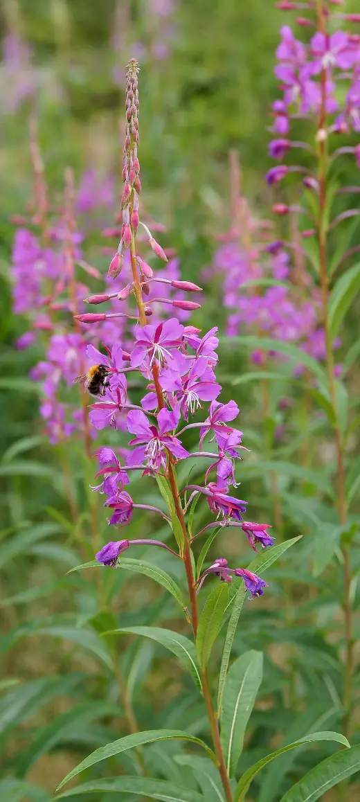
Fireweed teaFireweed Pineapple weed teaPineapple weed
Pineapple weed teaPineapple weed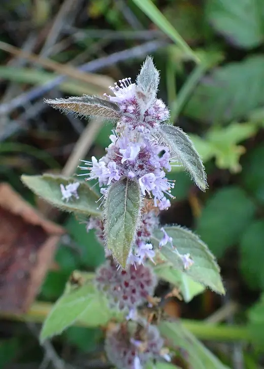
Wild mint iced teaWild mint Spicebush teaSpicebush
Spicebush teaSpicebush Honeysuckle lemonadeJapanese honeysuckle flowers
Honeysuckle lemonadeJapanese honeysuckle flowers Horchata de chufaChufa
Horchata de chufaChufa Chaga teaChaga
Chaga teaChaga Chia frescaDesert chia
Chia frescaDesert chia
Starters & snacks
 Fiddlehead sautéOstrich fern fiddleheads
Fiddlehead sautéOstrich fern fiddleheads Pickled rampsRamps
Pickled rampsRamps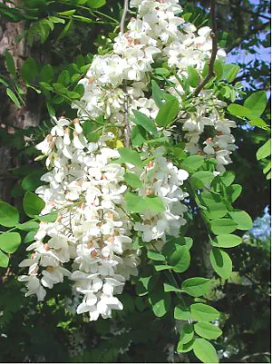
Black locust frittersBlack locust flowers Dandelion frittersDandelion
Dandelion frittersDandelion Purslane saladPurslane
Purslane saladPurslane- Verdolagas con huevoPurslane
- Nopales saladPrickly pear
 Roasted pecansPecan
Roasted pecansPecan Fried morelsMorel
Fried morelsMorel Steamers with drawn butterClams
Steamers with drawn butterClams Oysters on the half shellOysters
Oysters on the half shellOysters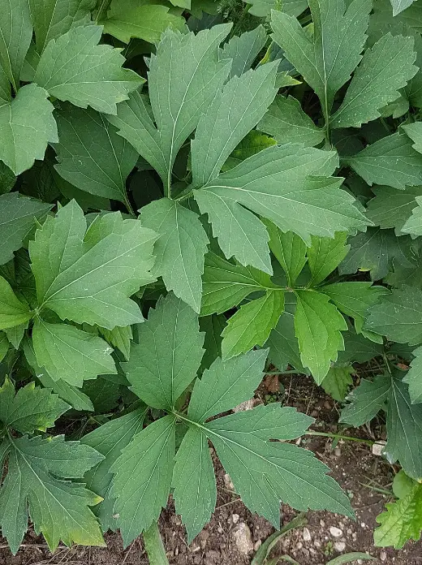
Sochan greensSochan
Sauces, preserves & sides
 Wild garlic mustard pestoGarlic mustard
Wild garlic mustard pestoGarlic mustard- Ramp butterRamps
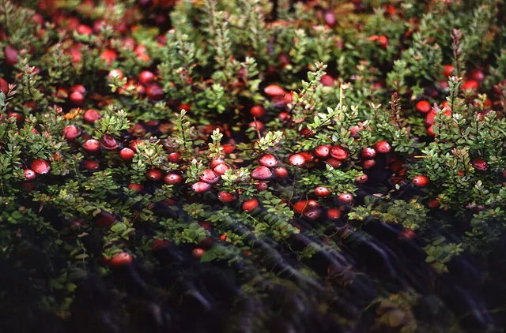
Cranberry sauceWild cranberry Elderberry syrupElderberry
Elderberry syrupElderberry Wild grape jellyWild grape
Wild grape jellyWild grape Crabapple jellyCrabapple
Crabapple jellyCrabapple Kinpira goboBurdock root
Kinpira goboBurdock root Beach plum jellyBeach plum
Beach plum jellyBeach plum Mayhaw jellyMayhaw
Mayhaw jellyMayhaw Ground cherry salsaGround cherry
Ground cherry salsaGround cherry Pickled bull kelpBull kelp
Pickled bull kelpBull kelp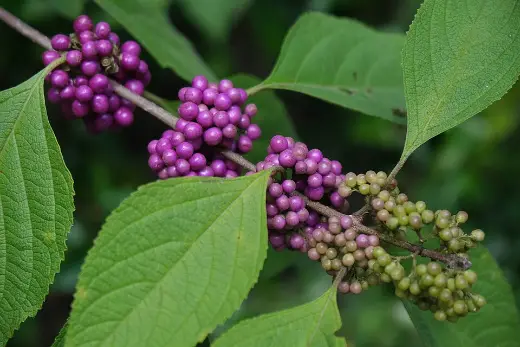
Beautyberry jellyAmerican beautyberry Black cherry jellyBlack cherry
Black cherry jellyBlack cherry Wild black currant jamWild black currant
Wild black currant jamWild black currant Buffaloberry jellySilver buffaloberry
Buffaloberry jellySilver buffaloberry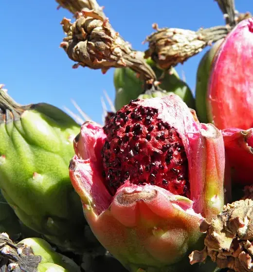
Saguaro fruit syrupSaguaro fruit Sea grape jellySea grape
Sea grape jellySea grape Kudzu blossom jellyKudzu
Kudzu blossom jellyKudzu Loquat jamLoquat
Loquat jamLoquat Wild nori furikakeLaver (wild nori)
Wild nori furikakeLaver (wild nori)
Main course
- Nettle soupStinging nettle
 Lamb's quarters spanakopitaLamb's quarters, Stinging nettle
Lamb's quarters spanakopitaLamb's quarters, Stinging nettle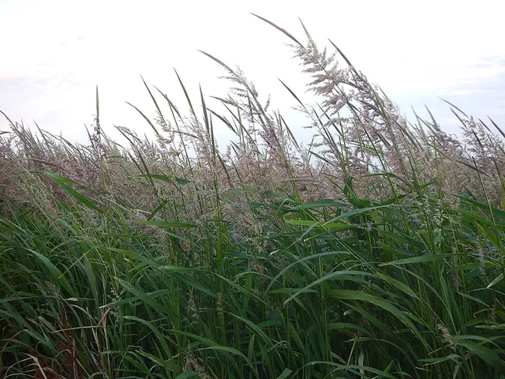
Wild rice soupWild rice Crawfish étoufféeCrayfish
Crawfish étoufféeCrayfish Camas and salmon bakeCamas
Camas and salmon bakeCamas Roasted sunchokesJerusalem artichoke
Roasted sunchokesJerusalem artichoke Chanterelle and wild rice soupChanterelle, Wild rice
Chanterelle and wild rice soupChanterelle, Wild rice Chicken of the woods tacosChicken of the woods
Chicken of the woods tacosChicken of the woods Puffball parmesanGiant puffball
Puffball parmesanGiant puffball Porcini pastaPorcini
Porcini pastaPorcini- New England clam chowderClams
 Mussels in white wineBlue mussels
Mussels in white wineBlue mussels Roasted hen of the woodsHen of the woods
Roasted hen of the woodsHen of the woods Lion's mane crab cakesLion's mane
Lion's mane crab cakesLion's mane- Morel cream pastaMorel
 Oyster mushroom po' boyOyster mushroom
Oyster mushroom po' boyOyster mushroom Wood nettle pesto pastaWood nettle
Wood nettle pesto pastaWood nettle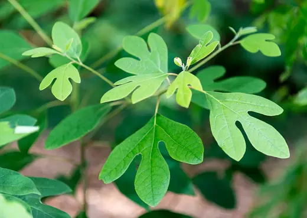
Gumbo with filéSassafras Prairie turnip stewPrairie turnip
Prairie turnip stewPrairie turnip
Breads & baking
 Acorn pancakesAcorns
Acorn pancakesAcorns Mesquite cookiesMesquite pods
Mesquite cookiesMesquite pods Black walnut breadBlack walnut
Black walnut breadBlack walnut Balsam fir shortbreadBalsam fir tips
Balsam fir shortbreadBalsam fir tips
Desserts
 Blackberry cobblerBlackberry
Blackberry cobblerBlackberry Persimmon puddingAmerican persimmon
Persimmon puddingAmerican persimmon Pawpaw ice creamPawpaw
Pawpaw ice creamPawpaw Huckleberry pieHuckleberry
Huckleberry pieHuckleberry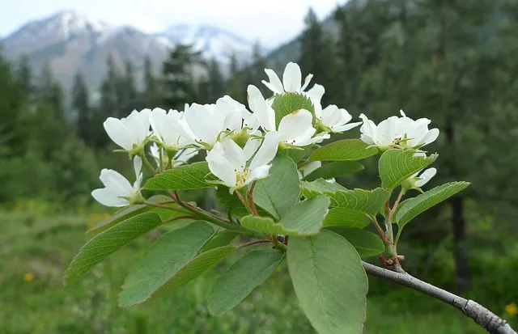
Serviceberry crumbleServiceberry- Pecan piePecan
- Maple taffy on snowMaple sap
 Mulberry galetteMulberry
Mulberry galetteMulberry Muscadine hull pieMuscadine grape
Muscadine hull pieMuscadine grape Highbush cranberry puddingHighbush cranberry
Highbush cranberry puddingHighbush cranberry Wild strawberry shortcakeWild strawberry
Wild strawberry shortcakeWild strawberry Irish moss blancmangeIrish moss
Irish moss blancmangeIrish moss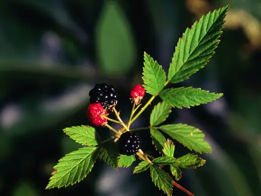
Dewberry cobblerDewberry Wild apple pieWild apple
Wild apple pieWild apple